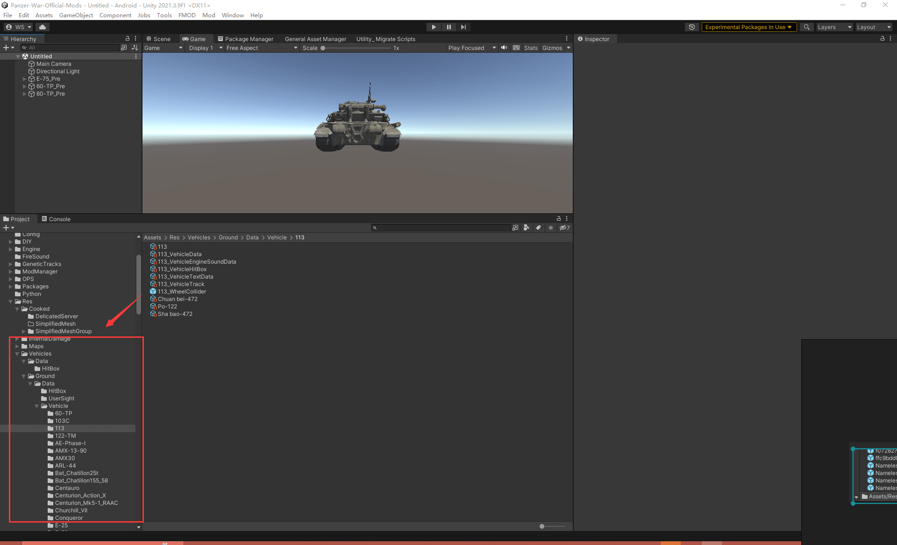

28. Modder Contribution Plan 共创载具 & 地图项目
Repository 项目地址
仓库访问需要申请权限，将邮箱发送给开发者。 Vehicle Repository 模组仓库： https://gitlab.waroftanks.cn/modder/panzer-war-community-mods Sound Repository 音效仓库： https://gitlab.waroftanks.cn/modder/Panzer-War-Fmod Map Repository 地图仓库： https://gitlab.waroftanks.cn/modder/ShanghaiWindyMaps
Contribution 合作方式
Use git to pull the project and create your own banch. Then push your branch. The developer will merge your branch to master branch. 使用 git 拉取项目，创建你的分支，然后上传提交。 由开发者合入你的分支。
Tutorial 使用项目教程
Video 视频教程
装甲纷争 模组工程项目下载 使用 与提交修改教程_单机游戏热门视频 装甲纷争 模组工程 编写自定义脚本 以及调整载具数值_哔哩哔哩_bilibili
Text 文本教程
1. Install Git 安装 Git
2. Install Toroisegit 安装小乌龟 Git
3. Pull Project 拉取项目
Click Git clone after installed Toroisegit.
在安装完小乌龟 Git 后，在菜单栏由 Git Clone...
 Open our repository and click clone. Copy the https link.
打开我们的项目地址，点击克隆，复制 https 的连接
Paste it into url
输入到 url
Open our repository and click clone. Copy the https link.
打开我们的项目地址，点击克隆，复制 https 的连接
Paste it into url
输入到 url
 Fillin the account in our gitlab.
输入在 gitlab 的账号与密码
Fillin the account in our gitlab.
输入在 gitlab 的账号与密码

4. Open the Project 打开项目
The main file is located at Assets/Res/Vehicles/Ground/Data 主要项目的文件位于： Assets/Res/Vehicles/Ground/Data 路径 
5. Commit Changes 提交修改
You can view this video
可查看此视频流程
Git 创建提交.mp4
After creating the changes to the project, you need to create your own branch and commit changes.
当自己完成了对工程的修改后，需要创建一个属于你的分支，然后再提交你的修改。
Create the branch. (Right click in the project folder!)
创建分支 （请确保是在项目的文件夹内点击右键）
Fill in the branch name. The branch name should be XXX-mod
输入你的分支名称，按照你的修改内容决定分支名称。如：为 xxx 坦克修改了 xxx 内容
 Switch to your branch
然后切换到项目分支
Switch to your branch
然后切换到项目分支
Toggle on your changes and commit. If some changes are not modified by yourself. Then do not toggle
勾选自己的修改项，然后点击 commit。 如果看到有文件不是自己修改的，别勾选。
Click Push
点击 Push
Confirm the branch name and click ok.
确认下分支名称，然后点击 OK
 You can push many commits to your branch. As long as the modification is done. You can notify the developer to merge your changes to the game.
你可以在自己创建的分支进行多次的修改提交，在觉得自己的分支修改没问题后，通知开发者合并自己的分支。开发者会检查是否内容可以合入 master 主分支。在修改的内容被合入 master 主分支后，可执行下面一个步骤 回到最新的项目。
You can push many commits to your branch. As long as the modification is done. You can notify the developer to merge your changes to the game.
你可以在自己创建的分支进行多次的修改提交，在觉得自己的分支修改没问题后，通知开发者合并自己的分支。开发者会检查是否内容可以合入 master 主分支。在修改的内容被合入 master 主分支后，可执行下面一个步骤 回到最新的项目。
6. Sync to the latest 同步项目到最新
After your changes are merged into master. You need to switch back to master and pull the latest project. The master branch contains your changes and others changes.
在自己的分支被合入 master 主分支后，需要切回 master 分支，然后拉取最新工程。此时，工程会包含你的修改，以及一些其他人的修改。
Switch back to master branch.
切回 master 分支
 Pull the latest files
Pull 拉取最新的文件
Pull the latest files
Pull 拉取最新的文件
 Now, the project is the latest.
此时，工程就变成最新的了。若需要在最新的工程进行修改，请重复步骤.5 的提交流程，创建新的分支提交即可。
If some error poped. Then click stash changes and then pull.
若拉取过程中出现了报错，则点击 Stash Changes 按钮，然后再点击 Pull。
After pull then click stash pop
在 Pull 执行完毕后，点击
Now, the project is the latest.
此时，工程就变成最新的了。若需要在最新的工程进行修改，请重复步骤.5 的提交流程，创建新的分支提交即可。
If some error poped. Then click stash changes and then pull.
若拉取过程中出现了报错，则点击 Stash Changes 按钮，然后再点击 Pull。
After pull then click stash pop
在 Pull 执行完毕后，点击
使用编辑器内 Git 工具

创建分支并提交修改

拉取最新项目
切换回 master 分支，然后点击下载并覆盖。

注意事项
配置文件报错
若存在配置文件显示 Missing，请和开发者反馈是哪个文件。